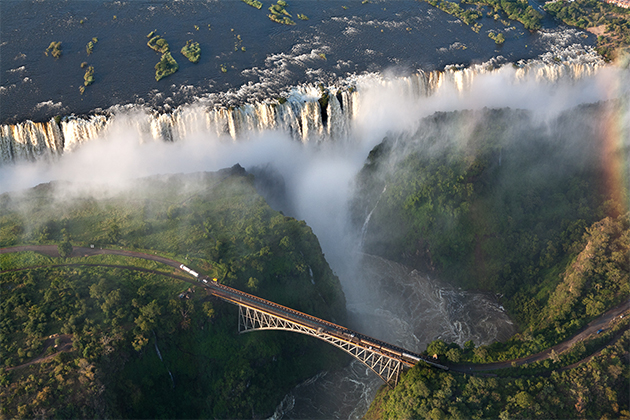
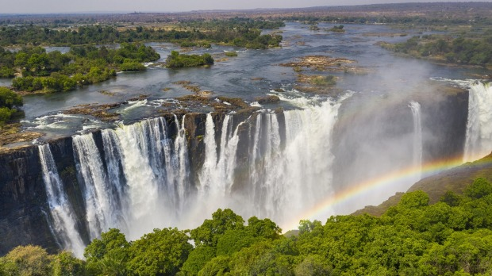
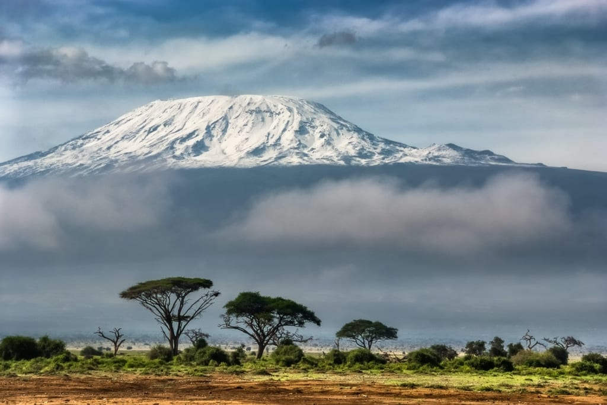
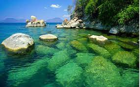

HOME
1.Victoria Falls

Victoria Falls is the only waterfall in the world with a length of more than
a kilometer and a height of more than hundred meters. It is also considered to be
the largest fall in the world.
The noise of Victoria Falls can be heard from a distance of 40 kilometers, while the
spray and mist from the falling water is rising to a height of over 400 meters and can
be seen from a distance of 50 kilometers. No wonder that the local tribes used to
call the waterfall Mosi-o-Tunya “The smoke that thunders”.

2.Kilimanjaro

Kilimanjaro is not only Africa’s tallest peak, but also the world’s tallest free
standing mountain. The summit, named Uhuru Point, is 5,895 meters (19,341 feet)
above sea level.
Most high mountains are part of ranges, such as Mount Everest’s Himalayan
Mountain Range. These are formed in a process called plate tectonics. Below the
ground, Earth’s crust is made up of multiple tectonic plates. These plates have
been moving since the beginning of time due to geologic activity

3.Lake Malawi

Lake Malawi/Lake Nyasa is an African Great Lake – the southernmost lake
in the East African Rift system. It is the fifth-largest freshwater lake in the world
(by volume) and the third-largest in Africa (behind Lake Victoria and Lake
Tanganyika). The lake is around 570km in length and some 75km at its widest
point, with one central depression extending to a depth of over 700m.
(If this doesn’t fully put things into perspective, Lake Malawi holds an estim
ated
7% of the world’s available surface freshwater.) It lies between Mozambique,
Malawi and Tanzania and the exact position of the international boundary between
Malawi and Tanzania remains a matter of considerable contention that has boiled
over into frequent diplomatic skirmishes.